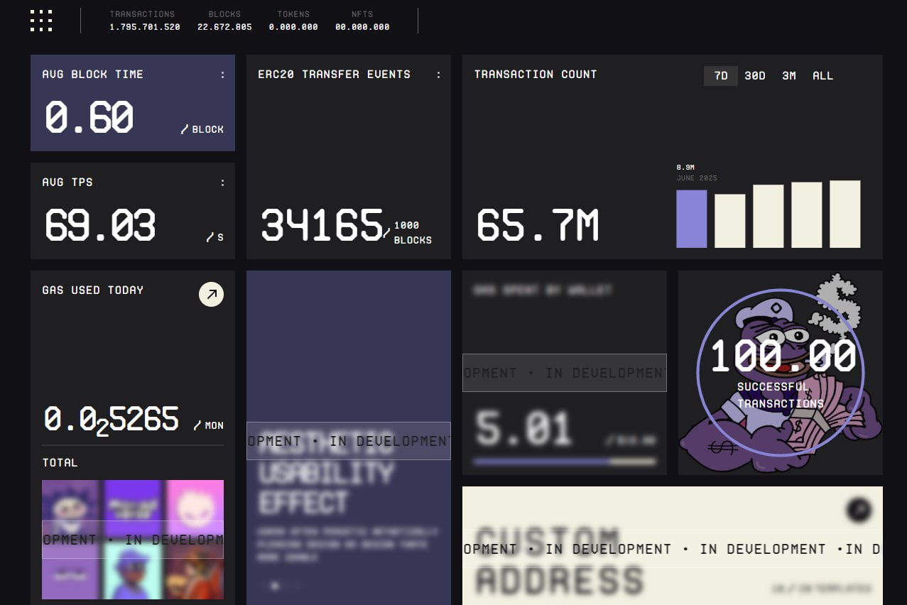

MergeCat
01An API powering the core logic of a Catizen-style game for a Web3 project.
Datsko DmytroBackend & smart contracts
I build APIs and application logic with C# and ASP.NET Core. My work spans SQL databases, Docker deployments, and Web3 projects with Solidity.
Explore selected work01 / SELECTED WORK
Game logic, marketplaces, and on-chain data.
A selection of projects I've worked on.
An API powering the core logic of a Catizen-style game for a Web3 project.
An OpenSea-style NFT marketplace with filtering and discovery for the Monad network.
A game on Monad where live Bitcoin price movements drive a race between red and green cars.

A CLEARER VIEW OF THE NETWORK.A dashboard project focused on the Monad network.
Conceptual project illustrations; Monad Dashboard shows the actual interface.
02 / ABOUT & TOOLKIT
I'm Dmytro, a backend engineer focused on the logic that makes applications work.
I primarily work with C# and modern ASP.NET Core, backed by SQL databases and PostgreSQL. I'm also familiar with classic ASP.NET and .NET Framework.
Beyond application code, I've worked with Docker and set up servers. In Web3, I've written several Solidity contracts with complete application logic and contributed to games, an NFT marketplace, and a network dashboard.
03 / LET'S CONNECT